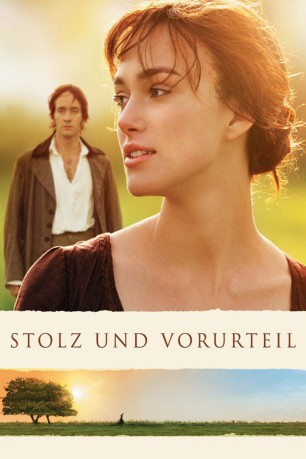

#1917 Stolz & Vorurteil
Alternativ: Pride & Prejudice
Auszeichnungen: für 4 Oscars nominiert 1 BAFTA-Awards gewonnen
 
 IMDB-Wertung: 7.8 / 10
IMDB-Wertung: 7.8 / 10  Metascore: 82
Metascore: 82 
Im ländlichen England des frühen 19. Jahrhunderts warten die fünf wohlgeratenen Töchter der britischen Großbürgerfamilie Bennet darauf, dass ein respektabler Herr um ihre Hand anhält. So jedenfalls sind die Spekulationen von Mutter Bennet, die ihre Töchter ohne Rücksicht auf Verluste unter die Haube zu bringen gedenkt. Dabei hat sie jedoch nicht mit dem Eigensinn von Elizabeth, der Zweitältesten, gerechnet, die sich partout nicht für den wohlhabenden Mr. Darcy begeistern will.
Jahr: 2005
Dauer: 129 Minuten
FSK: 0
Land: Frankreich Studio: Universal PicturesTonspuren:
Untertitel: Deutsch,
Auflösung: 1080p (1920x824) Größe: 10649 MB
Genre: Drama, Liebe
Regisseur: Joe Wright
Drehbuch: Jane Austen, Deborah Moggach, Emma Thompson
Soundtrack: Dario Marianelli
Darsteller:
Datei: X:\2005(N-Z)\Stolz & Vorurteil (2005, FSKo.Al., 1920x824).mkv seit 01.09.2015
Festplatte: HD 2005(G-Z)-2006(A-Z)
 Es gibt insgesamt 50 Filme in der Gruppe '2005(N-Z)'
Es gibt insgesamt 50 Filme in der Gruppe '2005(N-Z)'